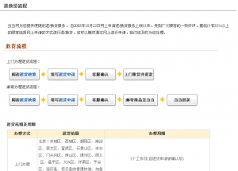
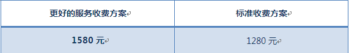

http://www.zhangyq.com/product-copywriting-is-interface-design/
如果你是一位“细节控”设计师：认为“细节决定成败”，界面上每个像素、每个图标、每种字体都该受到专注，那产品的每个文案亦是重要的。
什么是产品文案？你标注一个按钮的名字是“提交”还是“保存”；“新建”还是“创建”；用一般举例，还是详细阐述；用什么样的语气说明——这些都是文案。
百度百科这么描述产品文案的由来：产品设计阶段，UED成员需要大量的介入其中，使得产品设计在易用性，品牌彰显等方面最大化的把产品的价值点呈现给目标用户群体。
也就是说，在设计界面的时候，要设身处地为使用这个产品的用户着想，使用和用户一致的语言。只要它是web产品，就一定避免使用技术行话和多数人搞不懂的语言。
界面用词和设计常常相辅相成。常见的界面设计文案有： http://hiphotos.baidu.com/hxzon/pic/item/2b549f256608a52e35a80f57.jpg
1、图标的文字说明
图标几乎都要有文字说明，表述更加直观。图为facebook图标旁的文字说明。 http://hiphotos.baidu.com/hxzon/pic/item/779b5a60e891a7918cb10d57.jpg
2、表单要有示例和说明。
填写表单项要有所填内容的示例，图为新浪微博注册信息，其中邮箱填写格式就有提示文字和示例。 http://hiphotos.baidu.com/hxzon/pic/item/461bcd13a96df06ddc540157.jpg http://hiphotos.baidu.com/hxzon/pic/item/82fe0f233f6daf0093580757.jpg http://hiphotos.baidu.com/hxzon/pic/item/16fe504e76612847b2de0557.jpg http://hiphotos.baidu.com/hxzon/pic/item/59f2d70955e765ccd0581b57.jpg
3、按钮要有标签。
以“注册”为例，目前就有很多不同的文案说法：
你觉得哪个最直观呢？
4、流程要一步一步提示。
向导模式中，常常要有简明的文案做出步骤的说明。图为京东上使用向导（wizard）快速引导不熟悉流程的顾客完成付款。 http://hiphotos.baidu.com/hxzon/pic/item/78749a82396135f16d811957.jpg
5、退款等政策也要有个清楚的说明。

当当网的退款说明清楚明了，估计用户很多直接选择网上退款，减少了很多客服压力。
除了，理解层面的文字斟酌，文案的制定还要了解用户行为心理。老罗2010在北京海淀剧院全国巡演讲了一个有趣的案例：
 http://hiphotos.baidu.com/hxzon/pic/item/1af2cabf86b8794418d81f57.jpg
开始他们采用如图的推广文案，遭来无数的客服咨询和骂声。一是由于不了解“何为更好的服务”以及它和“标准服务”的差别；二是，觉得这样收费很不合理。增加了很多客服运营负担。之后，仅仅改了文案，价格和服务并未改变。（如下）
http://hiphotos.baidu.com/hxzon/pic/item/7a9f35fa72b25f50a9d31157.jpg
情况大为改观，不但客服压力减少，欣喜的报名者也越来越多。这就是文案的力量！！
看起来滑稽不足一提，但以上皆是用户体验。所以设计师们，除了会用图形语言表达，请尽量说“普通话”，ok？：）
{kind=link}
{kind=link}
{kind=link}
{kind=link}
{kind=link}
{kind=link}
{kind=link}
{kind=link}
{kind=link}